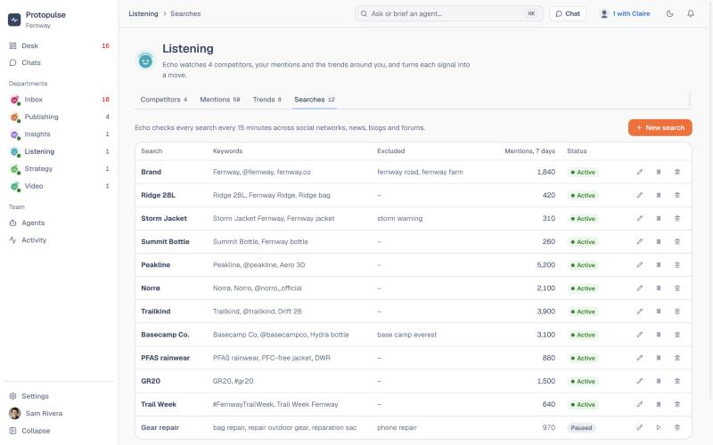
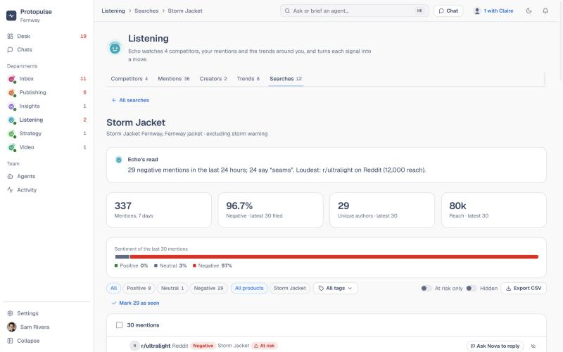
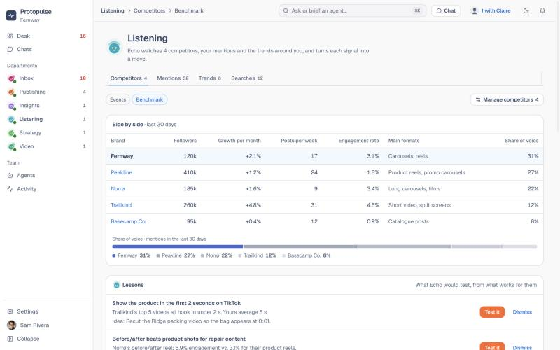
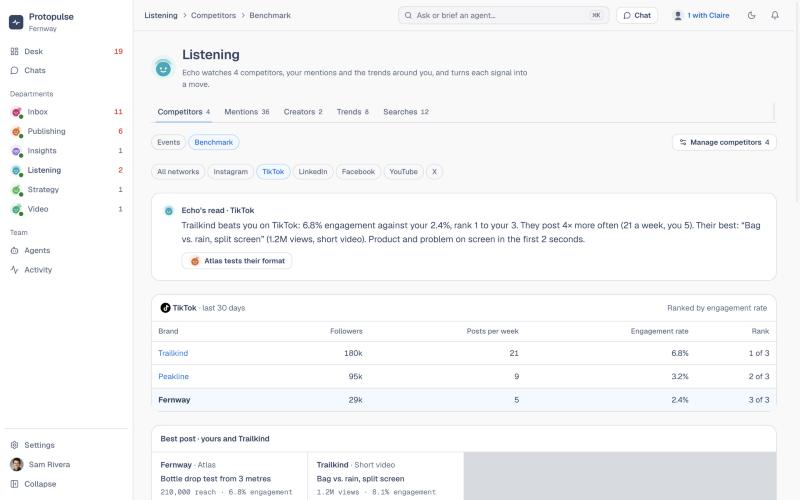
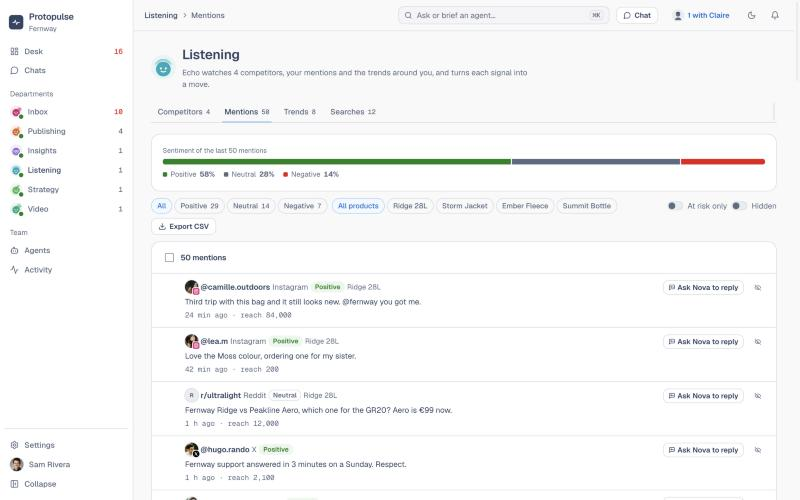
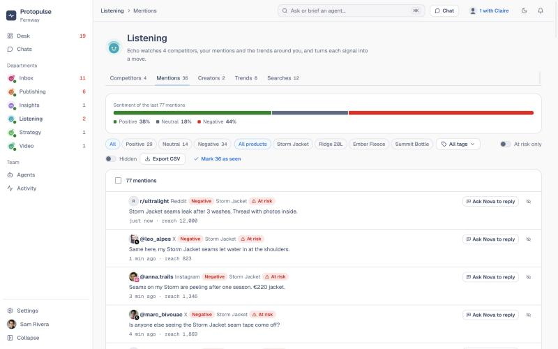
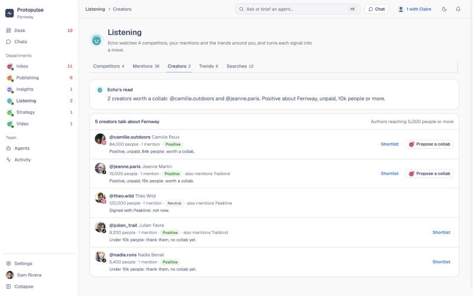

Echo, listening: agent depth
Session of 25 November 2026. Listening now lives: the numbers come from the mention feed and move when agents act, alert rules and guardrails are applied, a spike changes what Atlas does, and Echo brings the conclusion (her read on a search, a network, the creators) instead of the raw feed. Backlog: design-plans/agent-depth/echo-backlog.md, decisions: echo-log.md.
Parity, capability by capability
| Agorapulse capability | Before | After | PR |
|---|---|---|---|
| Spike alert that acts | Card with 3 options and no effect; « 27 mentions » that didn’t exist | 27 real mentions in the feed; guardrail-driven card; Atlas paused with a Claire statement, one Nova reply card, or a 2-hour watch; Act does it alone with Undo | #33, #77 |
| Counts from the data | ⌘K « 14 of 388 », Chat quoting a positive mention as negative, tab counting hidden ones, brief « 23 new mentions » | Every count read from listening/model.ts: screen, ⌘K, Chat, Desk brief | #33, #59, #115 |
| Sales digest | Email sent at once whatever the level | Suggest says what to tell, Draft puts the email on the Desk, Act sends | #38 |
| Competitor event settled everywhere | Only the Peakline card left the Desk | Every card about the event leaves | #38 |
| Listening alerts | Editable, never evaluated | Checked every minute on the feed, quiet window, copies Claire, joins the spike card | #45 |
| Search sync (Your searches) | New search « Collecting » forever | Collects for 10 minutes, then its 7-day volume; slots « N of 15 » applied | #45 |
| Competitor pool | An added competitor had no data; website link disabled | Backfilled in 10 min: benchmark row, profile, share of voice, first event; cap applied | #51 |
| Search view (feed + metrics) | A row in a table | Page per search: Echo’s read, four named numbers, its own feed with every move | #65 |
| Creators and authors | One Desk card leading nowhere | Creators tab, sheet, collab DM drafted by Nova, new action echo-creators | #74 |
| Competitors per network | One mixed row per brand | Network switch, ranks, best posts side by side, Echo’s reading, « Atlas tests their format », ⌘K answer | #96 |
| Tags and filing | 5 fixed tags, never applied by Echo | Editable tags with rules; Echo tags new mentions by level (Act, Draft card, Suggest buttons) | #104 |
| Seen / unseen | None | Unseen = needs you; Mark as seen; the tab badge counts only those | #111 |
| Mention → Inbox | Already there: Nova shows reply cards born from mentions as Inbox conversations | – | |
Before and after
Searches: from a table to a search view


Benchmark: per network, with a reading


Mentions: a feed that moves



Still open
- Later
Advanced query and screening (F3)
Answered « Later » at the pitch. Keyword matching already takes every word of a keyword, any keyword, minus exclusions.
- Later
Listening report export (F9)
Answered « Later ». CSV export of mentions stays.
- Dropped
Time series (F2) and per-product view (F4)
Dropped at the pitch. The spike card keeps its 10-hour chart; Mentions keeps the product filter.
- Known
Saved sessions keep old agent settings
A tester with a saved session keeps the previous Echo actions (labels, defaults) until « Reset the demo »: the core merges agents as saved.
- Done
Requests
From Atlas: spike pause wording (#77). To Atlas: hold today’s posts and competitor names from Echo’s state, both done on Atlas’s side.